가스기능장 (2014-07-20 기출문제)
1과목: 임의 구분
1. 다음 비파괴검사 중 내부결함의 검출에 가장 적합한 방법은?
- 자분탐상시험
- 방사선투과시험
- 침투탐상시험
- 전자유도시험
(정답률: 95%)

2. 도시가스사업의 범위에 해당되지 않는 경우는?
- 가스도매사업
- 일반도시가스사업
- 도시가스충전사업
- 석유정제사업
(정답률: 94%)
3. 접합 또는 납붙임 용기란 동판 및 경판을 각각 성형하여 심(seam)용접 등의 방법으로 접합하거나 납붙임 하여 만든 내용적 얼마의 용기를 말하는가?
- 1L 이하
- 3L 이하
- 1L 이상
- 3L 이상
(정답률: 74%)
4. 일산화탄소(CO)가 인체에 영향을 미쳤을 때 바로 자각증상이 있고 1~3분 만에 의식불명이 되어 사망의 위험이 있는 가스의 농도는?
- 128ppm
- 1280ppm
- 12800ppm
- 128000ppm
(정답률: 83%)
5. 액화석유가스 소형저장탱크를 설치할 경우 안전거리에 대한 설명으로 틀린 것은?
- 충전질량이 2500kg인 소형저장탱크의 가스충전구로부터 토지경계선에 대한 수평거리는 5.5m 이상이어야 한다.
- 충전질량이 1000kg 이상 2000kg 미만인 소형저장 탱크의 탱크간 거리는 0.5m 이상이어야 한다.
- 충전질량이 2500kg인 소형저장탱크의 가스충전구로부터 건축물기구부에 대한 거리는 3.5m 이상이어야 한다.
- 충전질량이 1000kg 미만인 소형저장탱크의 가스충전구로부터 토지경계선에 대한 수평거리는 1.0m 이상이어야 한다.
(정답률: 64%)
6. 길이 100m, 내경 30cm인 배관에서 기밀시험을 위하여 질소가스로 내부압력을 10atmㆍg까지 채우려고 한다. 필요한 질소량(m3)은 약 얼마인가?
- 70.7
- 90.7
- 110.7
- 130.7
(정답률: 46%)
7. 고압가스 안전관리법상 저온 용기의 경우에 적용되는 최고충전압력은 다음 중 어느 압력에 해당하는가?
- 35℃의 온도에서 그 용기에 충전할 수 있는 갓의 압력 중 최고압력
- 상용압력 중 최고압력
- 내압시험 압력의 3/5의 압력
- 기밀시험 압력의 1.1배의 압력
(정답률: 68%)
8. 표준상태에서 1L의 A가스의 무게는 1.429g, B가스의 무게는 1.964g이다. 이 두 기체의 확산속도비
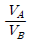
는 약 얼마인가?- 0.73
- 0.85
- 1.17
- 1.37
(정답률: 53%)
9. 다음 가연성가스 중 위험도가 가장 큰 것은?
- 염화비닐
- 산화에틸렌
- 수소
- 프로판
(정답률: 83%)
10. 고압가스 판매소에서 보관할 수 있는 고압가스 용적이 몇 m3 이상이면 보관실의 외면으로부터 보호시설까지 안전거리를 유지하여야 하는가?
- 30
- 50
- 100
- 300
(정답률: 52%)
11. 부피가 25m3인 LPG 저장탱크의 저장능력은 몇 톤인가? (단, LPG의 비중은 0.52이다.)
- 10.4
- 11.7
- 12.4
- 13.0
(정답률: 67%)
12. 차량에 고정된 탱크로 고압가스를 운반할 때 가스를 이송 또는 이입하는데 사용되는 밸브를 후면에 설치한 탱크에서 탱크 주밸브와 차량의 뒷범퍼와의 수평거리는 몇 cm 이상 떨어져 있어야 하는가?
- 20
- 30
- 40
- 50
(정답률: 77%)
13. 용해 아세틸렌 저장 시 주의사항에 대한 설명 중 틀린 것은?
- 저장소에는 화기엄금하며 방폭형 휴대용 전등 이외의 등화는 갖지 말 것
- 용기는 전락, 전도, 충격을 가하지 말고 신중히 취급할 것
- 저장장소는 통풍구조가 양호할 것
- 용기저장 시 온도는 40℃ 이하로 유지하고 저장실 지붕은 무거운 재료로 할 것
(정답률: 93%)
14. 300A 강관을 B((inch) 호칭으로 지름을 나타낸 것은?
- 4B
- 6B
- 10B
- 12B
(정답률: 82%)
15. 특정고압가스 사용시설에서 독성가스의 감압설비와 그 가스의 반응설비간의 배관에 반드시 설치하여야 하는 장치는?
- 역류방지장치
- 화염방지장치
- 독성가스 흡수장치
- 안전밸브
(정답률: 80%)
16. 뜨거운 가스와 차가운 가스 사이에서 밀도(비중)차에 의해 가장 큰 영향을 받는 것은?
- 전도
- 대류
- 복사
- 냉각
(정답률: 90%)
17. 액체산소 용기나 저온용 금속재료로서 가장 부적당한 것은?
- 탄소강
- 9% 니켈강
- 18-8 스테인리스강
- 황동
(정답률: 82%)
18. 식품접객업소로서 영업장의 면적이 몇 m2 이상인 가스사용시설에 대하여 가스누출 자동 차단장치를 설치하여야 하는가?
- 33
- 50
- 100
- 200
(정답률: 83%)
19. 다음 [그림]과 같은 냉동기의 가스퍼저(gas purger)의 작동순서에서 가장 먼저 하는 조작은?
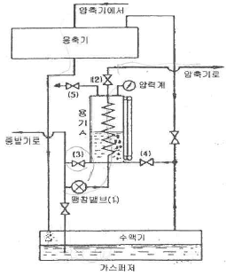
- 밸브 ⑶을 열어 용기 내에 냉매액을 일정 높이로 한다.
- 팽창밸브 ⑴과 밸브 ⑵를 열어 용기 A를 냉각시킨다.
- 밸브 ⑷를 열어 불응축 가스를 보낸다.
- 불응축가스의 배출밸브 ⑸를 개방하여 대기로 방출 시킨다.
(정답률: 79%)
20. 염소의 제법에 대한 설명으로 옳지 않은 것은?
- 염산을 전기분해 한다.
- 표백분에 진한 염산을 가한다.
- 소금물을 전기분해 한다.
- 염화암모늄 용액에 소석회를 가한다.
(정답률: 74%)
2과목: 임의 구분
21. 다음 중 이상기체의 법칙에 가장 가까운 것은?
- 저압, 고온에서 이상기체의 법칙에 접근한다.
- 고압, 저온에서 이상기체의 법칙에 접근한다.
- 저압, 저온에서 이상기체의 법칙에 접근한다.
- 고압, 고온에서 이상기체의 법칙에 접근한다.
(정답률: 85%)
22. 가스누출 자동차단장치를 설치하여도 설치목적을 달성할 수 없는 시설이 아닌 것은?
- 개방된 공장의 국부난방시설
- 경기장의 성화대
- 상ㆍ하 방향, 전ㆍ후 방향, 좌ㆍ우 방향 중에 2방향 이상이 외기에 개방된 가스 사용시설
- 개방된 작업장에 설치된 용접 또는 절단시설
(정답률: 83%)
23. 다음 반응식의 평형상수(K)를 올바르게 나타낸 것은? (단, A : CH4, B : O2, C : CO2, D : H2O)
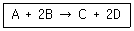
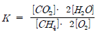
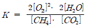
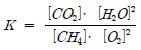
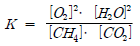
(정답률: 80%)
24. 차량에 부착된 탱크의 내용적은 1800L 이다. 이 용기에 액화 부틸렌을 완전히 충전하였다. 이 때 액화부틸렌의 질량은 몇 kg 인가? (단, 액화 부틸렌가스의 정수는 2.00 이다.)
- 768
- 780
- 878
- 900
(정답률: 82%)
25. 도시가스사업법에서 사용하는 용어의 정의를 설명한 것 중 틀린 것은?
- 도시가스사업은 수요자에게 연료용 가스를 공급하는 사업이다.
- 가스도매사업은 일반도시가스사업자 외의 자가 일반도시가스사업자 또는 산업통상자원부령이 정하는 대량수요자에게 천연가스를 공급하는 사업을 말한다.
- 도시가스사업자는 가스를 제조하여 일반 수요자에게 용기로 공급하는 사업자를 말한다.
- 가스사용시설은 가스공급시설 외의 가스사용자의 시설로서 산업통상자원부령으로 정하는 것을 말한다.
(정답률: 74%)
26. 도시가스의 공급계획을 가장 적절히 설명한 항목은?
- 어떤 지역 내의 피크(peak)시 가스소비량과 그 지역 내 전체 수요가의 가스기구 소비량의 총합계의 비를 추정하는 것이다.
- 해마다 증가하는 수요, 공급구역의 확대를 예측하여 항상 안정된 압력으로 양질의 가스를 원활하게 공급할 수 있도록 공급시설의 증가 등을 계획하는 것이다.
- 배관의 구경결정과 압력해석을 수행하는 것이다.
- 시시각각 변화하는 가스 수요량을 예측하여 가스제조설비, 가스홀더, 압송기, 정압기 등을 안전하고 효율적으로 운용하여 수용가에게 안정된 공급압력으로 가스를 공급하는 것이다.
(정답률: 83%)
27. 다음 중 용적형 압축기는?
- 원심식
- 터보식
- 축류식
- 왕복식
(정답률: 80%)
28. 가연성가스의 가스설비 또는 사용시설에 관련된 저장설비, 기화장치 및 이들 사이의 배관에서 누출된 가연성가스가 화기를 취급하는 장소로 유동하는 것을 방지하기 위하여 유동방지시설을 설치하여야 한다. 다음 기준 중 옳지 않은 것은?
- 유동방지시설은 높이 2m 이상의 내화성 벽으로 한다.
- 가스설비 등과 화기를 취급하는 장소의 사이는 수평거리로 5m 이상을 유지한다.
- 화기를 사용하는 장소가 불연성 건축물 내에 있는 경우 가스설비 등으로부터 수평거리 8m 이내에 있는 그 건축물의 개구부는 방화문 또는 망입유리를 사용하여 폐쇄한다.
- 화기를 사용하는 장소가 불연성 건축물 내에 있는 경우 가스설비 등으로부터 수평거리 8m 이내에 있는 그 건축물의 사람이 출입하는 출입문은 2중문으로 한다.
(정답률: 71%)
29. 고압가스를 취급하였을 때 다음 중 위험하지 않은 경우는?
- 산소 10%를 함유한 CH4를 10.0MPa까지 압축하였다.
- 산소 제조장치를 공기로 치환하지 않고 용접 수리 하였다.
- 수분을 함유한 염소를 진한 황산으로 세척하여 고압용기에 충전하였다.
- 시안화수소를 고압용기에 충전하는 경우 수분을 안정제로 첨가하였다.
(정답률: 83%)
30. 다음 고압가스 중 용해가스에 해당하는 것은?
- 암모니아
- 질소
- 프로판
- 아세틸렌
(정답률: 72%)
31. 다음 독성가스 중 제독제로서 탄산소다 수용액을 사용할 수 없는 것은?
- 염소
- 황화수소
- 포스겐
- 아황산가스
(정답률: 71%)
32. 고압가스 제조 시 안전관리에 대한 설명으로 틀린것은?
- 산소를 용기에 충전할 때에는 용기 내부에 유지류를 제거하고 충전한다.
- 시안화수소의 안정제로 아황산을 사용한다.
- 산화에틸렌을 충전 시에는 산 및 알칼리로 세척한 후 충전한다.
- 아세틸렌 중 산소의 용량이 전체 용량의 2% 이상인 경우에는 압축하지 아니한다.
(정답률: 64%)
33. 아세틸렌을 용기에 충전하는 때의 충전 중의 압력은 ( ㉮ ) 이하로 하고, 충전 후에는 압력이 15℃에서 ( ㉯ ) 이하로 될 때까지 정치해야 한다. 다음 ( )안에 알맞은 수치는?
- ㉮ 1.5MPa, ㉯ 2.5MPa
- ㉮ 4.6MPa, ㉯ 1.5MPa
- ㉮ 2.5MPa, ㉯ 1.5MPa
- ㉮ 4.5MPa, ㉯ 2.5MPa
(정답률: 91%)
34. 도시가스 정압기의 특성에 대한 설명 중 틀린 것은?
- 정특성 : 정상상태에 있어서의 유량과 1차 압력과의 관계
- 동특성 : 부하변동에 대한 응답의 신속성과 안전성
- 유량특성 : 메인밸브의 열림과 유량과의 관계
- 사용최대차압 : 메인밸브에 1차 압력과 2차 압력의 차압이 작용하여 실용적으로 사용할 수 있는 범위에서 최대로 되었을 때의 차압
(정답률: 80%)
35. 펌프에서 발생하는 공동현상(cavitation)의 방지방법이 아닌 것은?
- 펌프를 두 대 이상 설치한다.
- 펌프의 회전수를 늦추고 흡입회전도를 적게 한다.
- 펌프의 설치 위치를 낮추고 흡입양정을 길게 한다.
- 수직축 펌프를 사용하고 회전차를 수중에 완전히 잠기게 한다.
(정답률: 79%)
36. 고압가스 적용범위에서 제외되지 않는 고압가스는?
- 오토클레이브 안의 아세틸렌
- 액화브롬화메탄 제조설비 외에 있는 액화브롬화메탄
- 냉동능력이 3톤 미만인 냉동설비 안의 고압가스
- 항공법의 적용을 받는 항공기 안의 고압가스
(정답률: 89%)
37. 다음 중 수소의 공업적 제법이 아닌 것은?
- 석유의 분해법
- 수성가스법
- 석회질소법
- 물의 전기분해법
(정답률: 72%)
38. 20℃, 760mmHg에서 상대습도가 75%인 공기의 mol 습도는 약 몇 kg-mol H2O/kg-mol 건조공기 인가? (단, 물의 증기압은 17.5mmHg 이다.)
- 0.0176
- 0.0257
- 12.25
- 747.75
(정답률: 42%)
39. 가스관련 용어의 정의에 대한 설명으로 틀린 것은?
- 저장소란 산업통상자원부령으로 정하는 일정량 이상의 고압가스를 용기나 저장탱크로 저장하는 일정한 장소를 말한다.
- 용기란 고압가스를 충전하기 위한 것(부속품 제외)으로서 고정 설치된 것을 말한다.
- 저장탱크란 고압가스를 충전, 저장하기 위하여 지상 또는 지하에 고정 설치된 것을 말한다.
- 특정설비란 저장탱크와 산업통상자원부령이 정하는 고압가스관련 설비를 말한다.
(정답률: 90%)
40. 지상에 설치된 액화석유가스 저장탱크의 저장능력이 35톤인 충전시설에서 용기충전설비가 사업소경계까지 이격해야 하는 안전거리의 기준은?
- 21m 이상
- 24m 이상
- 27m 이상
- 30m 이상
(정답률: 55%)
3과목: 임의 구분
41. 상용압력 5MPa로 사용하는 안지름 85cm의 용접제원통형 고압설비 동판의 두께는 최소한 얼마가 필요한가? (단, 재료는 인장강도 800N/mm2의 강을 사용하고 용접효율은 0.75, 부식여유는 2mm이며, 동체 외경과 내경의 비가 1.2 미만이다.)
- 5.2mm
- 9.2mm
- 12.4mm
- 16.4mm
(정답률: 35%)
42. 동관의 종류로서 옳지 않은 것은?
- 타프치동
- 인산탈동
- 두랄루민
- 무산소동
(정답률: 80%)
43. 고압가스 안전관리법상 고압가스 제조허가의 종류에 해당되지 않는 것은?
- 냉동제조
- 특정설비제조
- 고압가스특정제조
- 고압가스일반제조
(정답률: 74%)
44. 유체를 한쪽 방향으로만 흐르게 하기 위한 역류방지용 밸브(valve)는?
- 글로브 밸브(glove valve)
- 게이트 밸브(gate valve)
- 니들 밸브(needle valve)
- 체크 밸브(check valve)
(정답률: 89%)
45. 가스가 250kJ의 열량을 흡수하여 100kJ의 일을 하였다. 이 때 가스의 내부에너지 증가는 약 몇 kJ 인가?
- 2.5
- 150
- 350
- 25000
(정답률: 67%)
46. 메탄가스가 완전 연소할 때의 화학반응식은 다음과 같다. 2g의 메탄이 연소하면 111.3kJ의 열량이 발생할 때 다음 반응식에서 는 약 얼마인가?
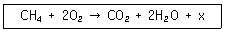
- 14kJ
- 890kJ
- 1113kJ
- 1336kJ
(정답률: 76%)
47. 액화석유가스 집단공급사업자로서 가스 사용자의 사용시설을 점검하게 할 때는 수용가 몇 개소마다 1명의 점검원이 있어야 하는가?
- 3000가구
- 4000가구
- 5000가구
- 6000가구
(정답률: 88%)
48. 배관규격 SPHT는 무엇을 의미하는가?
- 고압배관용 탄소강관
- 고온배관용 탄소강관
- 고온상압용 탄소강관
- 상온고압용 탄소강관
(정답률: 82%)
49. 도시가스 사업허가 기준으로 옳지 않은 것은?
- 도시가스의 안정적 공급을 위하여 적합한 공급시설을 설치, 유지할 능력이 있을 것
- 도시가스사업이 공공의 이익과 일반수요에 적합한 경제규모일 것
- 도시가스사업을 적정하게 수행하는데 필요한 재원과 기술적 능력이 있을 것
- 다른 가스사업자의 공급지역과 공용으로 공급할 것
(정답률: 89%)
50. 다음은 P-i선도이다. 2의 영역은 어떤 상태인가?
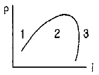
- 습증기
- 과냉각액
- 과열증기
- 건포화증기
(정답률: 80%)
51. 액화천연가스의 저장설비 및 처리설비는 그 외면으로부터 사업소 경계까지 일정 규모 이상의 안전거리를 유지하여야 한다. 이 때 사업소 경계가 ( )의 경우에는 이들의 반대편 끝을 경계로 보고 있다. ( )에 들어갈 수 있는 경우로 적합하지 않은 것은?
- 산
- 호수
- 하천
- 바다
(정답률: 92%)
52. 어떤 용기에 수소 1g, 산소 32g, 질소 56g을 넣었더니 1atm이 되었다. 이 때 수소의 분압은 약 몇 atm 인가?
- 1/9
- 1/7
- 1/3
- 1
(정답률: 76%)
53. 지름이 4m인 가연성가스 저장탱크 2대를 설치할때 탱크 사이의 거리는 최소 몇 m 이상으로 하여야 하는가?
- 1m
- 1.5m
- 2m
- 2.5m
(정답률: 77%)
54. 암모니아에 대한 설명으로 틀린 것은?
- 임계온도가 약 32℃이다.
- 공기 중 폭발하한값과 산소 중 폭발하한값이 거의 같다.
- 구리 및 구리합금을 부식시키지만 상온에서 강재를 침입하지는 않는다.
- 상온에서 비교적 낮은 압력으로도 액화가 가능하다.
(정답률: 69%)
55. 다음 중 단속생산 시스템과 비교한 연속생산 시스템의 특징으로 옳은 것은?
- 단위당 생산원가가 낮다.
- 다품종 소량생산에 적합하다.
- 생산방식은 주문생산방식이다.
- 생산설비는 범용설비를 사용한다.
(정답률: 80%)
56. MTM(Method Time Measurement)법에서 사용되는 1TMU(Time Measurement Unit)는 몇 시간인가?
- 1/100000시간
- 1/10000시간
- 6/10000시간
- 36/1000시간
(정답률: 80%)
57. np관리도에서 시료군 마다 시료수(n)는 100이고, 시료군의 수(k)는 20,
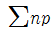
=77이다. 이 때 np관리도의 관리상한선(UCL)을 구하면 약 얼마인가?- 8.94
- 3.85
- 5.77
- 9.62
(정답률: 45%)
58. 미국의 마틴 마리에타사(Martin Marietta Corp.)에서 시작된 품질개선을 위한 동기부여 프로그램으로, 모든 작업자가 무결점을 목표로 설정하고, 처음부터 작업을 올바르게 수행함으로써 품질비용을 줄이기 위한 프로그램은 무엇인가?
- TPM 활동
- 6시그마 운동
- ZD 운동
- ISO 9001 인증
(정답률: 90%)
59. 일정 통제를 할 때 1일당 그 작업을 단축하는데 소요되는 비용의 증가를 의미하는 것은?
- 정상소요시간(Normal duration time)
- 비용견적(Cost estimation)
- 비용구배(Cost slope)
- 총비용(Total cost)
(정답률: 88%)
60. 그림의 OC곡선을 보고 가장 올바른 내용을 나타낸것은?
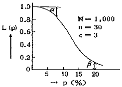
- α : 소비자 위험
- L(p) : 로트가 합격할 확률
- β : 생산자 위험
- 부적합품률 : 0.03
(정답률: 85%)